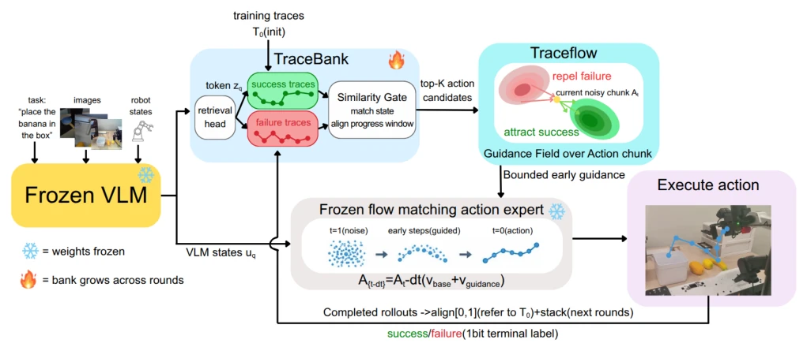

This paper equips a frozen Flow-Matching VLA policy with an external navigator. The core idea is straightforward: without updating weights, it relies solely on retrieved success and failure trajectories, using terminal bits as the sole label, to generate a bounded correction field. Its advantage lies in not requiring training of a critic or dynamics model, making deployment extremely lightweight; however, the disadvantage is also apparent, as it acts like a coach who merely pushes, unable to repair missing information within the policy itself. It performs remarkably on sorting tasks, but even underperforms the baseline on tasks requiring memory details. This naive data-stacking test-time adaptation yields diminishing returns after a limited number of rounds, representing a typical case of treating symptoms rather than the root cause, yet it excels in engineering deployability, making it suitable for scenarios sensitive to computational resources.
Once a frozen VLA policy is deployed, it cannot adjust current actions based on historical success or failure. Existing test-time methods such as Retrieve-then-Steer [8], Guided Action Flow [10], or DynaGuide [14] rely on learned critics, validators, or dynamics models to guide sampling. These methods either require additional training or fail to utilize the robot's own failure trajectories. The key challenge addressed in this paper is: how to utilize trajectories marked solely with terminal success/failure bits, without updating weights, to reject failure trajectories as negative evidence, while simultaneously avoiding misleading the policy with retrieved trajectories that share similar states but different progress. Existing work lacks explicit utilization of failure trajectories and progress alignment mechanisms, resulting in retrieved trajectories potentially matching appearance but not task progress, thereby triggering erroneous guidance.
The overall workflow encompasses TraceBank storage, retrieval, progress alignment, and guidance correction. First, TraceBank stores training trajectories and post-deployment success/failure rollouts, where each trajectory is marked only with terminal bits. During retrieval, the Similarity Gate calculates cosine similarity based on VLM states to separately select Top-K success and failure windows. The key innovation is Progress-Aligned Retrieval, which ensures retrieved action windows align with the current task progress through local state matching, rather than relying solely on appearance similarity. The guidance term is based on kernel density estimation of the retrieved windows, where success trajectories generate attraction and failure trajectories generate repulsion. The core component is Bounded Guidance; the correction term has an upper limit relative to the baseline velocity to prevent the guidance from dominating the policy and causing collapse, and its intensity decays with solver steps, with the baseline expert ultimately completing fine-grained actions. The entire process requires no backpropagation, modifying only the sampling path.
Evaluation was conducted on real robot fruit packing, tape tasks, and simulation environments LIBERO and RoboMemArena. Metrics include TSR, CSR, and the number of error sequences. Results indicate significant improvements on sorting tasks, such as RoboMemArena Sequence rising from 78.92% to 91.50%, and real task error sequences decreasing from 20 to 0. However, performance deteriorated on Counting and Occlusion tasks, indicating an inability to handle missing information. TraceBank stacking experiments demonstrate that returns peak and subsequently decline after a limited number of rounds, and the success/failure ratio cannot predict the optimal retrieval allocation. Ablation studies confirm that unbounded guidance leads to performance collapse, validating the necessity of bounded correction.
其他图片Other Figures

Fig. 1. TraceFlow: observation-to-action guidance and trace reuse. Frozen VLM states uq condition the action expert and are encoded by a frozen retrieval head into query tokens zq. Training traces initialize T0 in TraceBank. The Similarity Gate matches states and aligns progress to return top-K+ success and optional top-K−failure action windows. Their densities define a guidance field over action chunks: green attracts the current noisy chunk At (yellow) toward successful regions, while red repels it from failed ones. Bounded guidance modifies early flow-integration steps before execution. Completed rollouts receive one terminal success/failure bit and are progress-aligned before stacking for subsequent rounds. Snowflakes indicate frozen weights; the flame indicates bank growth.